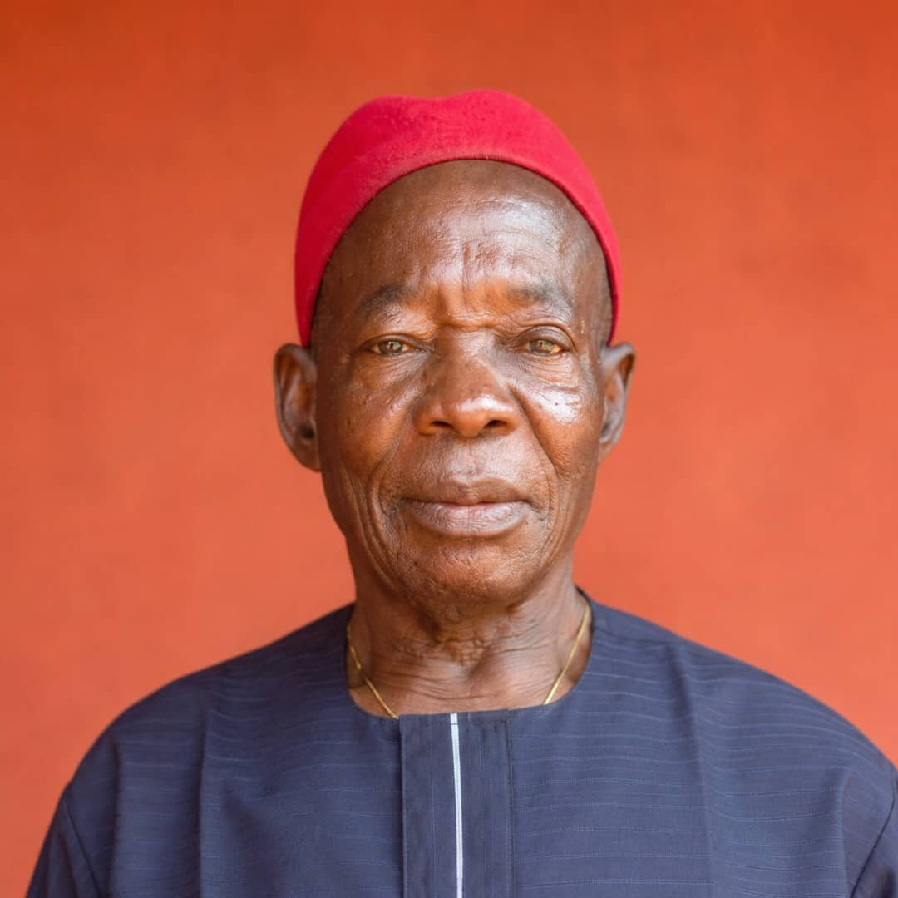

In Loving Memory
A Celebration of Life
Late Pa. Hyacinth
Nwafor Ogunor
Orameife (Obuwetaku)
With Deep Sorrow
Announcing His Passing
The entire Ogunor family of Enuagu Village, Enugu-Ukwu, Njikoka Local Government Area of Anambra State, announces the passing of our beloved brother, uncle, father, and grandfather. He lived a full life of 90 years, grounded in faith, family, and community, and will be deeply missed by all who knew him.
Thursday, 22nd October 2026
His Compound, Enuagu Village
Friday, 23rd October 2026
St. Theresa’s Catholic Church
Sunday, 25th October 2026
St. Theresa’s Catholic Church

Portrait photoRemembering Him
A Life Well Lived
From a trader crossing Kafanchan and Jos, to a young man rebuilding after the Civil War, to a builder of Nigeria's electricity grid, a devoted civil servant, and finally the respected eldest man of Umuokpora Kindred — Pa. Hyacinth Nwafor Ogunor's ninety years were a story of resilience, faith, and quiet leadership. Above all, he was a father who called every single day.
Read His Life StoryIn Their Own Words
Tributes
Sons, daughters, grandchildren, in-laws and friends have shared over 30 tributes to his life. Here is a glimpse.
“A father is not only the one who gives birth. A father is the one who stays.”
“His spirit continues to live in the hearts, memories, and character of his children.”
“A good life leaves footprints that death cannot erase.”
Obuwetaku
May Your Gentle Soul Rest in Peace
Family, friends and well-wishers are warmly invited to share memories, photos and condolences in celebration of a life so richly lived.